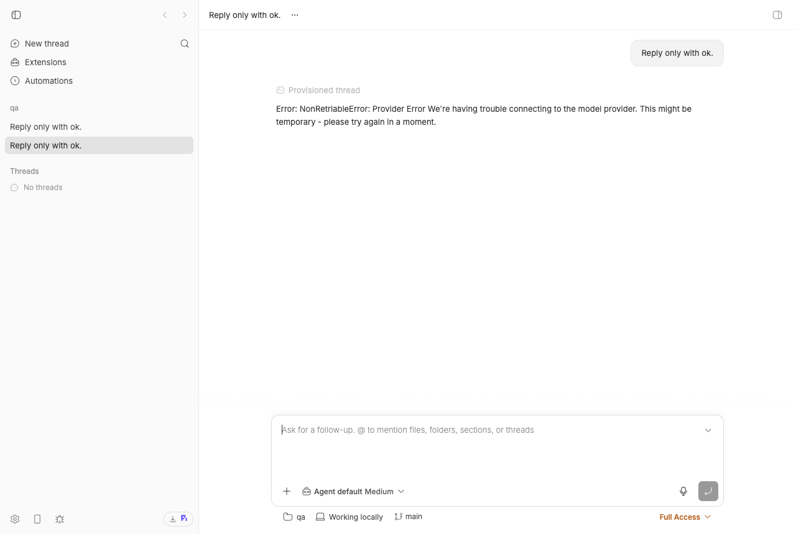
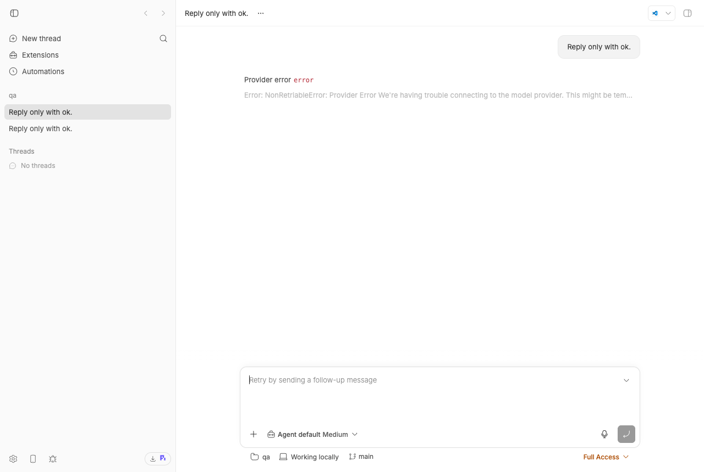

#2222 · Cursor provider: default model plus any MCP server with a non-string enum or tuple items yields an unactionable "Provider Error"
Verdict: PARTIALLY REPRODUCED · Root-cause confidence: medium (high for every bb-side mechanism; the provider-side schema rejection itself could not be exercised on this machine — see Environment)
1. TL;DR
A user who starts a Cursor (acp-cursor) thread in bb on the default settings sees the thread "fail" at once with Error: NonRetriableError: Provider Error We're having trouble connecting to the model provider. This might be temporary - please try again in a moment. Nothing is wrong with the network. The reporter traced it to cursor-agent acp loading the user's own ~/.cursor/mcp.json servers, forwarding their tool schemas to the model, and the model's backend (Gemini / Grok / Kimi routes) rejecting the whole request because one property uses a non-string enum or tuple-form items. bb's shipped picker policy puts auto first and cursor-grok-4.6-medium second, both in the intolerant set, so the default experience is the broken one.
What I could verify: (1) bb's picker/default policy is exactly as described — auto is the default and Grok 4.6 is next (test, passes on main); (2) bb relays whatever text Cursor produces verbatim, with no classification or hint — in the mode the earlier #1612 investigation observed (error streamed as an agent_message_chunk) the turn even completes with status completed and the error is rendered as ordinary assistant prose (test, screenshots below); (3) the reporter's cursor-agent build does read ~/.cursor/mcp.json and the project's .cursor/mcp.json itself, outside any bb boundary, and the "trouble connecting" text is not in the CLI — it comes from Cursor's backend (bundle excerpts); (4) bb's own dynamic tools (update_environment_directory, AskUserQuestion, bb_workflow_run/result) carry neither construct, so bb is not the source of the offending schema (lint); (5) the #1613 guard only rejects recursive $refs and only for plugin tools.
What I could not verify: the provider-side rejection table. The only Cursor credential on this Mac expired on 2026-08-18 and cannot be refreshed non-interactively, so both the installed cursor-agent (2026.06.19) and the reporter's exact build (2026.08.11-e8db854, downloaded to /tmp) answer session/new with Authentication required. The claim is nevertheless well corroborated: the reporter filed the MCP-server half upstream as hyperdxio/hyperdx#2967, where the maintainers accepted the analysis, traced the non-string-enum case to a known Gemini function-declaration limitation, and merged a fix (PR #2971) plus a regression lint for exactly these two constructs.
2. Claims vs findings
| Claim from the issue | Status | Evidence |
|---|---|---|
Every thread on the Cursor provider fails instantly with Error: NonRetriableError: Provider Error We're having trouble connecting… | Unverified live | No valid Cursor credential on this machine (token exp 2026-08-18T23:12Z; both CLI builds return -32000 Authentication required on session/new: 2026.08.11, 2026.06.19). The same text, same build, same mechanism was reported by the same author in #1612 and accepted upstream in hyperdx#2967. |
| The message text originates in Cursor's backend, not in the CLI and not in bb | Verified | The text is not in the cursor-agent 2026.08.11 bundle at all (§1); it is a backend string the CLI wraps in a client-side NonRetriableError class (§2). No string in the bb repo matches "trouble connecting" / "NonRetriable". bb adds nothing and removes nothing. |
| The message is wrong: connectivity is fine and retrying never helps | Unverified, corroborated | No live turn could be run here (every probe ends at Authentication required), so neither "connectivity is fine" nor "retry never helps" was observed. The NonRetriableError wrapper class name is the CLI's own classification of the failure as non-retriable (§2), and hyperdx#2967 reproduces the same text deterministically per schema construct, which is inconsistent with a transient connectivity fault. |
cursor-agent acp auto-loads ~/.cursor/mcp.json servers | Verified (code) | Bundle: MCP discovery merges <project>/.cursor/mcp.json and ~/.cursor/mcp.json; local stdio servers from the user file are pre-warmed at session start (§3–4). Those servers never pass through bb: bb only contributes its own bb-bridge session MCP server (bridge.ts#L475-L497). |
| … and forwards those servers' tool schemas to the model request | Unverified, corroborated | The bundle excerpts show discovery and pre-warming only; no excerpt was found that shows MCP tool lists being serialised into the backend request, and the request itself could not be observed without a login. That the schemas reach the model is the premise of hyperdx#2967/#2971 (changing the MCP server's schema changed the outcome), which the HyperDX maintainers reproduced. |
Non-string enum rejects on Gemini; tuple items rejects on Gemini/Grok/Kimi; other constructs pass | Unverified live, corroborated | Not runnable here (auth). Independently confirmed by HyperDX maintainers (hyperdx#2967: "Gemini's function declarations only accept enum alongside type string", same as google-gemini/gemini-cli#4127); they merged a string-enum fix and a lint for both constructs. Stub server for re-running the matrix: stub-mcp.mjs + acp-probe.mjs. |
primaryModels is ["auto","cursor-grok-4.6-medium","gpt-5.6-sol-medium","claude-opus-5-thinking-medium","claude-fable-5-thinking-medium","composer-2.5"] in packages/agent-runtime/src/acp-launch-specs.ts | Verified (moved) | Same list, now at plugins/provider-acp/src/known-agents.ts#L62-L70 (CURSOR_PRIMARY_MODELS) since #2325; the agent-runtime file no longer exists. |
auto is the catalog default | Verified | Cursor's list marks auto - Auto (default); splitPrimaryModels keeps it and re-anchors the default onto the primary list; thread creation takes models.find(isDefault) ?? models[0]. issue-2222-cursor-default-model.test.ts passes on main (output). |
auto resolves to Grok | Unverified | Server-side routing inside Cursor; nothing in bb or the CLI bundle decides it. Plausible but cannot be checked without a working account. |
| bb passes through a string that actively misleads (no translation) | Verified | Prompt failure → emitSessionError (bridge.ts#L2232-L2252) → translator provider/error {message:"Provider error", detail:<verbatim>} (delta-translation.ts#L905-L915) → UI promotes the detail to the title (error-display.ts#L104-L110). No string in the repo matches "trouble connecting" / "NonRetriable". Live: events, screenshot below. |
| #1613's guard only covers bb's own plugin tools; user MCP servers reach the provider without passing through it | Verified | assertNoRecursiveJsonSchemaReferences runs at bb.agents.registerTool (plugin-api.ts#L1106-L1109, impl host-policy.ts#L1599-L1660) and checks only recursive $ref/$recursiveRef/$dynamicRef. |
cursor-agent -p does not advertise MCP tool schemas even with --approve-mcps | Unverified | Needs a working account. |
claude-fable-5-thinking-medium is NO-ZDR and dead under privacy mode | Partially | The captured list shows claude-fable-5-thinking-high - Claude Fable 5 1M Thinking (NO ZDR) (fixture); bb strips the "(NO ZDR)" marker from display names (model-catalog.ts), so the picker hides the one signal that would explain the failure. Behaviour under privacy mode not tested. |
| Upstream filed as hyperdxio/hyperdx#2967 | Verified | Closed 2026-08-21; fix PR hyperdx#2971 merged with a "no non-string enum / no array-form items" regression test. |
3. Environment
- bb
494f66526(main, 2026-08-24;origin/mainhas no newer commits). Worktree…/wf_846839f8-f8a-1. - macOS 26.5.2 (Darwin 25.5.0, arm64), node v22.23.1, pnpm, codex-cli 0.149.1.
- cursor-agent installed:
2026.06.19-20-24-33-653a7fb. Reporter's build2026.08.11-e8db854downloaded to/tmp/bb-2222-cursor/dist-packagefor bundle inspection and probes (deleted after). Both share the same~/.cursorstate whose access token expired 2026-08-18;cursor-agent statusreports "Logged in (unable to fetch user details)" and every API call answers Authentication required. Re-login is interactive (browser OAuth) so it was not attempted. - Dev instances (each run used its own worktree's instance; all data dirs deleted afterwards):
- Original run (worktree
…wf_846839f8-f8a-1): app:16172, server:24172, host daemon:32172, hosthost_9uarapt26m, projectproj_t7vv48zeee, threadsthr_dfz694c9nb(chunk) /thr_7indmzf82x(rpc-error) — the two screenshots come from this run. - Revision run (worktree
…wf_846839f8-f8a-11, freshpnpm install+turbo run build, 17/18 tasks cached): app:17641, server:25641, host daemon:33641, data dir~/.bb-dev/bb-machines-HOST.getbb.app-checkouts-bb-.claude-worktrees-wf_846839f8-f8a-11-74f73771ee85, hosthost_zappstbcry, projectproj_hb3gxwmjsd("qa", local path/tmp/bb-2222-scratch), threadsthr_qd75xj4jaz(chunk, no--machine),thr_bgimskmw92(chunk,--machine),thr_3men59dpi4(rpc-error). The event JSON linked in step D is from this run.
- Original run (worktree
bbbelow means the dev-instance CLI:BB_SERVER_URL=http://localhost:<server port> pnpm bb:dev …from the worktree root (oreval "$(scripts/bb-dev-app env)"first).
4. Minimal reproduction
cursor-agent; steps A are for a reader who has one. Steps B–D run without any account and reproduce everything bb does with the result.A. Provider-side (needs a working Cursor login) — not run here
- Confirm the CLI is usable:
cursor-agent --version # reporter: 2026.08.11-e8db854 cursor-agent status # must show a real user, not "unable to fetch user details"
- Run the raw ACP probe with one stub MCP server whose single property is a non-string enum, on the bb default model:
mkdir -p /tmp/bb-2222-scratch bash /tmp/bb-reports/issues/2222/repro/run-probe.sh auto enum-number bash /tmp/bb-reports/issues/2222/repro/run-probe.sh cursor-grok-4.6-medium tuple-items bash /tmp/bb-reports/issues/2222/repro/run-probe.sh claude-opus-5-thinking-medium tuple-items # control: expected to pass bash /tmp/bb-reports/issues/2222/repro/run-probe.sh auto none # control: no MCP server
Expected per the issue: the first two printRESULT … text= "Error: NonRetriableError: Provider Error We're having trouble connecting …"(or anERRORline with that message), the controls printtext= "ok". What this machine prints instead (both builds):cursor-agent: /tmp/bb-2222-cursor/dist-package/cursor-agent (2026.08.11-e8db854) agent: {"loadSession":true,"mcpCapabilities":{"http":true,"sse":true},... ERROR {"code":-32000,"message":"Authentication required","data":{"message":"Authentication required. Please run 'agent login' first, then call authenticate() with methodId 'cursor_login'."}} text= "" (393ms) - Same through bb: write the stub into the workspace's
.cursor/mcp.json(so cursor-agent loads it itself, exactly like the user's~/.cursor/mcp.json) and spawn a thread on the defaults:cat > /tmp/bb-2222-scratch/.cursor/mcp.json <<'JSON' {"mcpServers":{"probe":{"command":"node","args":["/tmp/bb-reports/issues/2222/repro/stub-mcp.mjs"],"env":{"PROBE_SCHEMA":"enum-number"}}}} JSON bb thread spawn --project <proj> --provider acp-cursor --prompt "Reply only with ok."
0. Copy the repro files into a bb checkout (required before B, C, E)
The unit tests live inside the repo packages (they import ./bridge.js, ./model-catalog.js, ./server.js) and the names under 2222/repro/ are not the in-tree names: the bridge test resolves its fake agent as a sibling called issue-2222-cursor-error-fake-agent.mjs, and the two lint tests are both named issue-2222-advertised-schema-lint.test.ts in their own packages. setup-worktree.sh does the five copies with the exact targets; run it from anywhere with the path of a bb checkout at 494f66526 that has had pnpm install --frozen-lockfile --prefer-offline && pnpm exec turbo run build:
bash /tmp/bb-reports/issues/2222/repro/setup-worktree.sh /path/to/bb copied 5 files into /path/to/bb: ?? packages/provider-bridge-acp/src/bridge/issue-2222-cursor-default-model.test.ts ?? packages/provider-bridge-acp/src/bridge/issue-2222-cursor-error-fake-agent.mjs ?? packages/provider-bridge-acp/src/bridge/issue-2222-cursor-provider-error.test.ts ?? plugins/ask-user-question/src/issue-2222-advertised-schema-lint.test.ts ?? plugins/workflows/src/issue-2222-advertised-schema-lint.test.ts
Equivalent manual commands (from the checkout root, R=/tmp/bb-reports/issues/2222/repro):
cp $R/issue-2222-cursor-default-model.test.ts packages/provider-bridge-acp/src/bridge/issue-2222-cursor-default-model.test.ts cp $R/issue-2222-cursor-provider-error.test.ts packages/provider-bridge-acp/src/bridge/issue-2222-cursor-provider-error.test.ts cp $R/cursor-error-fake-agent.mjs packages/provider-bridge-acp/src/bridge/issue-2222-cursor-error-fake-agent.mjs cp $R/issue-2222-advertised-schema-lint.workflows.test.ts plugins/workflows/src/issue-2222-advertised-schema-lint.test.ts cp $R/issue-2222-advertised-schema-lint.ask-user-question.test.ts plugins/ask-user-question/src/issue-2222-advertised-schema-lint.test.ts
Steps B, C and E below are run from the checkout root (real output of the revision run: setup-worktree-output.txt, revise-step-B.txt, revise-step-C.txt, lint-workflows.txt, lint-ask-user-question.txt). Without step 0, vitest reports No test files found; with the fake agent copied under its artifact name instead of the target name, step C fails on spawn with ENOENT.
B. bb's default-model policy (unit, passes on main — documents the policy)
pnpm --dir packages/provider-bridge-acp exec vitest run src/bridge/issue-2222-cursor-default-model.test.ts
✓ issue #2222 — Cursor picker order and default > puts `auto` first (default) and Grok 4.6 second
Test Files 1 passed (1)
Tests 1 passed (1)
The test feeds the captured cursor-agent --list-models output (2026.08.11) through parseAgentModelLines → buildAgentModelCatalog → splitPrimaryModels with the shipped CURSOR_PRIMARY_MODELS and asserts ["auto","cursor-grok-4.6-medium", …] with auto flagged isDefault — the value thread-create.ts uses when a user has not picked a model. File: issue-2222-cursor-default-model.test.ts.
C. bb relays the text verbatim (unit; 2 pass, 1 fails on main)
cursor-error-fake-agent.mjs is a 60-line ACP agent that answers every session/prompt the way the failing cursor-agent acp does: FAKE_CURSOR_ERROR_MODE=chunk streams the text as an agent_message_chunk and ends the turn normally (what the #1612 investigation observed for the sibling RetriableError on this CLI build); rpc-error answers with a JSON-RPC error carrying the same message. issue-2222-cursor-provider-error.test.ts drives the real bridge against it:
pnpm --dir packages/provider-bridge-acp exec vitest run src/bridge/issue-2222-cursor-provider-error.test.ts
✓ chunk mode: the error text becomes ordinary assistant prose and the turn completes
✓ rpc-error mode: the error text is the provider/error detail, verbatim
× [expected behaviour, fails on main] a Cursor 'Provider Error' on a zero-output turn carries an actionable hint
AssertionError: expected 'Error: NonRetriableError: Provider Er…' to match /tool schema|MCP server|privacy mode/i
Received: "Error: NonRetriableError: Provider Error We're having trouble connecting to the model provider. This might be temporary - please try again in a moment."
Test Files 1 failed (1)
Tests 1 failed | 2 passed (3)
The first assertion is the more damning one: in chunk mode bb records turn/completed status: "completed", no provider/error, and the message as an agentMessage item — the thread looks like the model answered. Full output: unit-tests-main.txt (original run), revise-step-C.txt (revision run, identical result).
D. What the user sees in bb (live dev instance, simulated agent)
Everything in this step is scripted in step-D-live.sh (run from the checkout root while scripts/bb-dev-app current is up: bash /tmp/bb-reports/issues/2222/repro/step-D-live.sh <out-dir>; full output of the revision run: revise-step-D.txt). The individual commands:
- Start your instance and create a project on it (host id from
bb machine list):scripts/bb-dev-app current # prints App/Server/Host daemon URLs and the data dir eval "$(scripts/bb-dev-app env)" mkdir -p /tmp/bb-2222-scratch && git -C /tmp/bb-2222-scratch init -q bb machine list Name ID Status Last seen -------------------- --------------- --------- --------- OWNER’s MacBook Pro host_zappstbcry connected just now curl -s -X POST $BB_SERVER_URL/api/v1/projects -H 'content-type: application/json' \ -d '{"name":"qa","source":{"type":"local_path","path":"/tmp/bb-2222-scratch","hostId":"host_zappstbcry"}}' # {"id":"proj_hb3gxwmjsd", …} - Register the fake agent as a custom ACP provider (same plugin, same bridge, same UI path as
acp-cursor):bb plugin config provider-acp set customAgents '[{"id":"cursor-sim","displayName":"Cursor (simulated #2222)", "command":"'"$(command -v node)"'", "args":["/tmp/bb-reports/issues/2222/repro/cursor-error-fake-agent.mjs"], "env":{"FAKE_CURSOR_ERROR_MODE":"chunk"}}]' - Spawn a thread, naming the machine explicitly:
bb thread spawn --project proj_hb3gxwmjsd --provider acp-cursor-sim --permission-mode full \ --machine host_zappstbcry --prompt "Reply only with ok." --json # { "id": "thr_bgimskmw92", "projectId": "proj_hb3gxwmjsd", "providerId": "acp-cursor-sim", "status": "starting", … }--machine <id-or-name>is the "Execution machine ID or unambiguous name" option ofthread spawn(spawn.ts#L185-L189;--hostis an alias). The original report omitted it. On the independent verifier's fresh instance the omitted form failed withError: Failed to create thread: HTTP 404: Host not found; on the revision instance the same omitted command succeeded (thr_qd75xj4jaz,spawn output,events— identical tail, preceded by foursystem/thread-provisioningevents because it was the project's first thread). Which host the server picks when none is named evidently depends on instance state, so always pass--machine. - Events (
bb-thread-chunk-events.json,curl $BB_SERVER_URL/api/v1/threads/thr_bgimskmw92/events):3 thread/identity {"providerThreadId":"fake-cursor-97796"} 4 turn/started 5 turn/input/accepted 6 item/started {"item":{"type":"agentMessage","id":"da8fb07577-i2","text":""}} 7 item/agentMessage/delta {"delta":"Error: NonRetriableError: Provider Error We're having trouble connecting to the model provider. This might be temporary - please try again in a moment."} 8 item/completed {"item":{"type":"agentMessage", ... same text ...}} 9 turn/completed {"status":"completed"}Noprovider/errorevent exists in this thread.

thr_dfz694c9nb; the revision run's thr_bgimskmw92 produced the same event sequence): the provider error is rendered as a normal assistant reply under "Provisioned thread"; no error styling, the turn is "completed", the composer is ready for a follow-up. Nothing tells the user what to change.- Re-run the
set customAgentscommand with"FAKE_CURSOR_ERROR_MODE":"rpc-error"and spawn again with the same--machineflag (thr_3men59dpi4). Events (json):3 thread/identity {"providerThreadId":"fake-cursor-98541"} 4 turn/started 5 turn/input/accepted 6 provider/error {"message":"Provider error","detail":"Error: NonRetriableError: Provider Error We're having trouble connecting to the model provider. This might be temporary - please try again in a moment."} 7 turn/completed {"status":"failed"} 8 provider/warning {"category":"general","summary":"Error: NonRetriableError: Provider Error …"}

thr_7indmzf82x; same events in the revision run's thr_3men59dpi4): the "Provider error" row shows the verbatim backend text (truncated) and the composer says "Retry by sending a follow-up message" — the one action that, per the issue, never helps.E. bb's own advertised tools are clean (unit, passes on main)
OUT=/tmp/bb-reports/issues/2222/repro/bb-workflow-tools.json \ pnpm --dir plugins/workflows exec vitest run src/issue-2222-advertised-schema-lint.test.ts # Tests 1 passed (1) OUT=/tmp/bb-reports/issues/2222/repro/bb-ask-user-question-tool.json \ pnpm --dir plugins/ask-user-question exec vitest run src/issue-2222-advertised-schema-lint.test.ts # Tests 1 passed (1)
Dumps the tools exactly as the server converts them (zod → JSON Schema through the same fake host) and walks every node for enum with non-string values or array-form items: none in bb_workflow_run, bb_workflow_result (json, also no $ref after #1613), AskUserQuestion (json); update_environment_directory is a single string property (thread-environment-directory.ts#L30-L48). So on a default install the offending schema can only come from the user's own MCP servers.
Repro files: 2222/repro/
5. Root cause
Where the failure originates (outside bb). cursor-agent acp builds its tool list from three sources: the client's session/new … mcpServers (bb's bb-bridge proxy for dynamic tools), the workspace's .cursor/mcp.json, and the user's ~/.cursor/mcp.json — the last two are read by the CLI itself (bundle §3–4). The schemas are forwarded to Cursor's backend as function declarations. Some model routes (Gemini; Grok/Kimi for tuple items) reject the whole request when any declaration uses a construct outside their accepted subset, and the backend answers with the generic "Provider Error … trouble connecting" string, which the CLI wraps in a NonRetriableError (§1–2). This is consistent with the Gemini limitation HyperDX's maintainers cite (google-gemini/gemini-cli#4127) and with the reporter's per-construct matrix, which I could not re-run here.
Why bb makes it the default experience. known-agents.ts#L62-L70:
export const CURSOR_PRIMARY_MODELS = [ "auto", "cursor-grok-4.6-medium", "gpt-5.6-sol-medium", "claude-opus-5-thinking-medium", "claude-fable-5-thinking-medium", "composer-2.5", ];
splitPrimaryModels orders the picker by this list and re-anchors isDefault onto it (Cursor already marks auto - Auto (default)), and thread-create.ts#L138-L139 takes models.find(isDefault) ?? models[0] for a new thread. Grok 4.6 was deliberately promoted to slot 2 in #1795 (1a0ccdc01). So a user who never opens the picker runs auto; the first alternative they are offered is Grok 4.6. Whether auto routes to Grok is Cursor's decision and not observable from bb.
Why the message is unactionable in bb. The bridge has two paths for an agent-reported failure and neither interprets the text:
- JSON-RPC error on
session/prompt→ bridge.ts#L2232-L2252 → emitSessionError → translator emitsprovider/error { message: "Provider error", detail: <agent text> }(delta-translation.ts#L905-L915) and the UI promotes the detail to the title (error-display.ts#L104-L110). The composer then invites a retry. - Error streamed as
agent_message_chunk(what the same CLI build did for aRetriableErrorin the #1612 investigation) → delta-translation.ts#L643 treats it as assistant prose; the prompt returnsend_turn; bb records a successful turn. No error event exists at all.
There is no layer in bb that recognises Cursor's Error: <Kind>: … convention, so the request for a translated message (issue point 2) has nowhere to hook today. The #1613 guard (assertNoRecursiveJsonSchemaReferences) is the only schema policy and it covers only recursive references and only tools registered through bb.agents.registerTool; a lint of bb's own tools for these two constructs would pass today (section E) and would never see the user's servers anyway.
Deeper issue. bb strips Cursor's (NO ZDR) marker from display names (model-catalog.ts, "Display names are stripped of noise … the (NO ZDR) data-retention marker"), so the one hint that claude-fable-5-thinking-* cannot be used under privacy mode is hidden from the picker while the family stays in the primary list.
6. Proposed fix (first principles)
- Picker policy (
plugins/provider-acp/src/known-agents.ts): this is product policy, not a bug in mechanism, and I am not confident the right answer is to demoteauto— it is Cursor's own default and the cheapest tier for the user. A defensible minimal change is to movecursor-grok-4.6-mediumbelow the Claude/GPT/Composer families so the first alternative a user reaches for is a tolerant one, and to keepautofirst. Demotingautoitself should wait for evidence that it really routes to Grok. Risk: a one-line reorder;issue-1688-*style fixture test pins the order. - Make the failure legible in the Cursor dialect of the ACP bridge (
packages/provider-bridge-acp, which already hasdialect: "cursor"handling): when a turn ends with no tool calls and no other text, and the only output (chunk or prompt error) matches/^Error: (NonRetriable|Retriable|ActionRequired)Error: /, (a) report it as aprovider/errorwitherrorInfoinstead of assistant prose, and (b) for the Provider Error … trouble connecting text on the first turn append a fixed hint: "Cursor's backend rejected the request before the model ran. Likely causes: an MCP server in ~/.cursor/mcp.json or .cursor/mcp.json whose tool schema this model rejects (non-string enum, tuple items), or a model unavailable under your privacy mode. Try a Claude/GPT/Composer model, or detach MCP servers to confirm." This is provider translation, so the daemon/bridge is the right layer per AGENTS.md; the server and UI need no change and noHOST_DAEMON_PROTOCOL_VERSIONbump if the hint rides the existingdetailstring. The failing test in section C is the acceptance test. What could go wrong: matching prose a model genuinely wrote — mitigated by requiring an otherwise empty turn and the exact prefix. - Optional lint of bb's own registered tools for non-string
enum/ tupleitemsnext to the recursive-$refguard (host-policy.ts). Cheap and the hyperdx#2971 precedent shows the shape, but it does not address this issue (bb's tools are already clean) and it cannot see the user's servers. Rejecting at registration would also take down a whole plugin for one field, so a warning surfaced as a plugin status detail is preferable to a throw. - Keep the
(NO ZDR)marker as a badge/description instead of stripping it, so the privacy-mode failure is explainable from the picker.
7. PR review
No open pull request is linked to this issue.
8. Related issues
- #1612 — same symptom, same reporter, recursive
$reftrigger; closed not-reproducible (report). The earlier report also recorded a cursor-agent error arriving as anagent_message_chunk, the basis for chunk mode above. - #1613 — added
assertNoRecursiveJsonSchemaReferencesand removedz.json()from the workflow tools. - #1795 / #1688 — promoted Cursor Grok 4.6 into the primary list (slot 2).
- #2018 — Cursor MCP approval gate for bb's session MCP server (why bb writes
mcp-approvals.json). - hyperdxio/hyperdx#2967, #2971 — the MCP-server side, with maintainer confirmation and a regression lint.
9. Appendix
Commands run (chronological, abbreviated)
gh issue view 2222 --repo get-bb/bb --json … pnpm install --frozen-lockfile --prefer-offline; pnpm exec turbo run build # 18 tasks, 17 cached git fetch origin main; git log 494f66526..origin/main --oneline # 0 commits cursor-agent --version # 2026.06.19-20-24-33-653a7fb cursor-agent status # "Logged in (unable to fetch user details)" cursor-agent --list-models # Error: Authentication required cursor-agent -p --trust --model auto "Reply only with ok." # Error: Authentication required security find-generic-password -s cursor-access-token -w | <decode JWT exp> # exp 2026-08-18T23:12:39Z curl -fsSL https://downloads.cursor.com/lab/2026.08.11-e8db854/darwin/arm64/agent-cli-package.tar.gz # 75 MB, extracted to /tmp/bb-2222-cursor node 2222/repro/extract-bundle-evidence.mjs /tmp/bb-2222-cursor/dist-package bash 2222/repro/run-probe.sh auto enum-number [/tmp/bb-2222-cursor/dist-package] # both builds: -32000 Authentication required pnpm exec turbo run test --filter=@bb/provider-bridge-acp # baseline 255 passed pnpm --dir packages/provider-bridge-acp exec vitest run src/bridge/issue-2222-*.test.ts # 3 passed, 1 failed (expected-behaviour) OUT=… pnpm --dir plugins/workflows exec vitest run src/issue-2222-advertised-schema-lint.test.ts OUT=… pnpm --dir plugins/ask-user-question exec vitest run src/issue-2222-advertised-schema-lint.test.ts scripts/bb-dev-app current; scripts/bb-dev-app env curl -X POST $BB_SERVER_URL/api/v1/projects … /tmp/bb-2222-scratch host_9uarapt26m # proj_t7vv48zeee pnpm bb:dev plugin config provider-acp set customAgents '[…cursor-sim…]' pnpm bb:dev thread spawn --provider acp-cursor-sim --prompt "Reply only with ok." --json # thr_dfz694c9nb, thr_7indmzf82x curl $BB_SERVER_URL/api/v1/threads/<id>/events > 2222/repro/bb-thread-*-events.json doobie --headless < 2222/repro/shot-thread-*.js # screenshots pnpm dev:stop; rm -rf <data dir> /tmp/bb-2222-cursor /tmp/bb-2222-scratch # Revision run (worktree wf_846839f8-f8a-11, after the independent verification) pnpm install --frozen-lockfile --prefer-offline; pnpm exec turbo run build # 18 tasks, 17 cached bash 2222/repro/setup-worktree.sh <worktree> # 5 files copied (step 0) pnpm --dir packages/provider-bridge-acp exec vitest run src/bridge/issue-2222-cursor-default-model.test.ts # 1 passed pnpm --dir packages/provider-bridge-acp exec vitest run src/bridge/issue-2222-cursor-provider-error.test.ts # 2 passed, 1 failed (expected) OUT=… pnpm --dir plugins/workflows exec vitest run src/issue-2222-advertised-schema-lint.test.ts # 1 passed OUT=… pnpm --dir plugins/ask-user-question exec vitest run src/issue-2222-advertised-schema-lint.test.ts # 1 passed lsof -nP -iTCP -sTCP:LISTEN | grep -E ':(17641|25641|33641)\b' # free before start scripts/bb-dev-app current # :17641 / :25641 / :33641, host_zappstbcry bash 2222/repro/step-D-live.sh 2222/repro # proj_hb3gxwmjsd; thr_qd75xj4jaz, thr_bgimskmw92, thr_3men59dpi4 BB_SERVER_URL=http://localhost:25641 pnpm bb:dev machine list pnpm dev:stop; rm -rf <data dir> /tmp/bb-2222-scratch; git checkout/clean the 5 copied files
Artifacts
acp-probe.mjs,stub-mcp.mjs,run-probe.sh— raw ACP matrix runner (needs a Cursor login).out-acp-probe-2026.08.11.txt,out-acp-probe-installed-2026.06.19.txt— the auth failures.cursor-agent-bundle-evidence.txt(+extractor).cursor-error-fake-agent.mjs,issue-2222-cursor-provider-error.test.ts,issue-2222-cursor-default-model.test.ts,unit-tests-main.txt.lint (workflows),lint (ask-user-question),bb-workflow-tools.json,bb-ask-user-question-tool.json,lint-workflows.txt,lint-ask-user-question.txt.bb-thread-chunk-events.json,bb-thread-rpc-error-events.json,shot-thread-chunk.js,shot-thread-rpc-error.js.- Revision run:
setup-worktree.sh,setup-worktree-output.txt,step-D-live.sh,revise-step-B.txt,revise-step-C.txt,revise-step-D.txt,revise-machine-list.txt,spawn-chunk-no-machine.txt,spawn-chunk.txt,spawn-rpc-error.txt,bb-thread-chunk-no-machine-events.json,revise-install.log,revise-build.log,revise-dev-start.log. - Independent verifier's artifacts:
2222/verify/. - Logs:
install.log,build.log,test-bridge-acp-baseline.txt,dev-start.log.
Worktree changes (not committed, not pushed)
The five files step 0 copies in; they were removed from the worktree again after the revision run:
?? packages/provider-bridge-acp/src/bridge/issue-2222-cursor-default-model.test.ts ?? packages/provider-bridge-acp/src/bridge/issue-2222-cursor-error-fake-agent.mjs ?? packages/provider-bridge-acp/src/bridge/issue-2222-cursor-provider-error.test.ts ?? plugins/ask-user-question/src/issue-2222-advertised-schema-lint.test.ts ?? plugins/workflows/src/issue-2222-advertised-schema-lint.test.ts
Verification
An independent verifier re-ran the report in their own worktree at 494f66526 and dev instance (:14729/:22729/:30729). They reproduced: the -32000 Authentication required outcome of step A on both cursor-agent builds; step B (pass); step C (2 pass, 1 expected failure with the same AssertionError); step E (both pass, same tool JSON); step D's event sequences in both modes; the bundle-evidence excerpts (re-downloaded 2026.08.11 bundle, independent grep); all 13 permalinked code excerpts; and the absence of newer commits on origin/main. Artifacts: 2222/verify/.
Their findings and what changed in this revision:
- Major — unit-test steps were not followable on a fresh checkout (no copy step; artifact names differ from the in-tree names the tests expect). Fixed by adding step 0 with
setup-worktree.shand the explicitcptargets, then re-running B, C and E from a fresh worktree exactly as written (outputs linked in step 0). Existing artifact names were kept. - Minor — step D's
thread spawnomitted--machineand 404'd on the verifier's instance. Re-ran step D live on a fresh instance: the omitted form happened to work there (thr_qd75xj4jaz), the--machineform works in both; the commands now pass--machine, show where the host id comes from, and the whole step is scripted instep-D-live.sh. Event JSON in step D was regenerated from this run. - Minor — "connectivity is fine, retry never helps" was over-labelled as Verified. Split into "text originates in Cursor's backend, not the CLI or bb" (Verified) and the connectivity/retry claim (Unverified, corroborated).
- Minor — "forwards their tool schemas" was over-labelled as Verified. Split into "auto-loads
~/.cursor/mcp.json" (Verified from the bundle) and "forwards those schemas to the model request" (Unverified, corroborated by hyperdx#2967).
Verdict, root cause and proposed fix are unchanged.